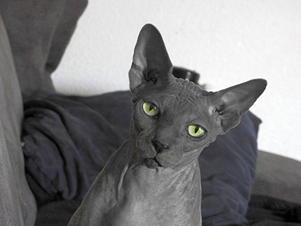
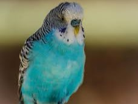
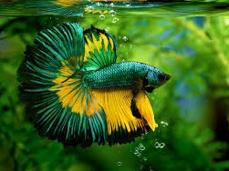
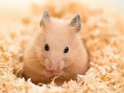

Dogs
Dogs are loyal companions known for their playful and friendly nature. They require regular exercise and grooming
to stay healthy and happy.
There are various breeds of dogs, each with unique characteristics and personalities. Whether you prefer small lap
dogs or large breeds for outdoor activities, there's a dog for everyone.
Consider adopting a dog from a shelter to provide a loving home to a pet in need. Remember behavioral problems
are the owner's fault not the breed.
Cats

Cats are independent and curious animals known for their agility and hunting skills. They make excellent pets for
people who appreciate their graceful movements and affectionate behavior.
There are various breeds of cats, from long-haired Persians to playful Sphynx cats. Each breed has its own unique
traits and characteristics.
Provide your cat with a balanced diet, regular vet check-ups, and plenty of toys to keep them entertained and healthy.
Birds

Birds are colorful creatures that bring joy with their melodious songs and vibrant feathers. They require special
care and attention to thrive in a domestic environment.
There are various species of pet birds, including parrots, canaries, and finches. Each species has specific dietary
needs and habitat requirements.
Consider setting up a spacious cage with perches, toys, and fresh food and water to create a comfortable environment
for your feathered friend.
Fish

Fish are fascinating creatures that add beauty and tranquility to home aquariums. They come in a variety of colors
and sizes, making them a popular choice for pet enthusiasts.
There are freshwater and saltwater fish species, each requiring specific water conditions and tank setups. Research
the needs of your chosen fish species to provide a suitable aquatic environment.
Regularly clean the aquarium and monitor water quality to ensure the health and well-being of your fish.
Rabbits

Rabbits are gentle and social animals known for their curious nature and affectionate behavior. They can form strong bonds with their owners.
There are different breeds of rabbits, from dwarf varieties to larger breeds suitable for families. Provide your rabbit
with a spacious cage or indoor enclosure with plenty of hay, fresh vegetables, and toys for enrichment.
Spend quality time bonding to strengthen your relationship and ensure their well-being.
Hamsters

Hamsters are small, nocturnal rodents known for their energy and playful antics. They are popular pets for children
and adults alike due to their compact size and low maintenance care.
There are different types of hamsters, such as Syrian hamsters and dwarf hamsters, each with unique characteristics
and care requirements.
Provide your hamster with a secure cage equipped with bedding, a wheel for exercise, and fresh food and water daily.